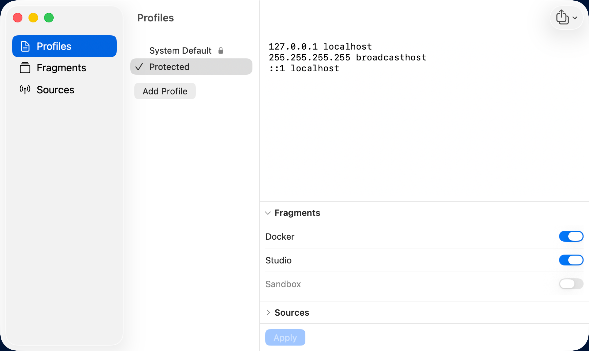

Hosts Switchr
Switch your /etc/hosts with a click — profiles, blocklists, and reusable fragments, right from the menu bar.
Download for macOS
v0.2.5·macOS 26 (Tahoe)+·Free & open-source
Switch your /etc/hosts with a click — profiles, blocklists, and reusable fragments, right from the menu bar.
v0.2.5·macOS 26 (Tahoe)+·Free & open-source

A profile is a named /etc/hosts. Build a few, switch between them instantly, and layer on blocklists and snippets as you need them. Coming from Gas Mask? Same idea, rebuilt natively for modern macOS.
Create named /etc/hosts setups and flip between them from the menu bar. The active one is a single click away.
Subscribe to hosts-format lists — StevenBlack, HaGeZi, or your own URL. They refresh in the background with ETag caching.
Toggle a snippet — like your Docker container hostnames — into any profile. Edit freely; re-apply once when you're ready.
A "needs re-apply" badge appears when your edits drift from what's live. Cancel reverts cleanly to the applied state.
Back up your whole setup to JSON, restore it on another Mac, or import a plain hosts file as a profile or fragment.
Runs menu-bar-only, no Dock icon. New versions install themselves in place from GitHub — no quitting, no drag-and-drop.
Hosts Switchr uses no Apple Developer Program, so macOS asks you to approve it once. Here's the whole dance.
Double-click Hosts Switchr. When macOS says it "can't verify the developer," click Done — not "Move to Trash."
Open System Settings → Privacy & Security, scroll to Security, and click Open Anyway.
Authenticate and click Open. macOS only asks once — after that it launches normally.
Your machine stays in your hands. /etc/hosts only ever changes when you click Apply, via one admin-password prompt. No signing, no background helper daemon, no Developer Program. Don't take our word for it: read the code that writes /etc/hosts, and check your download against the SHA-256 listed in each release.